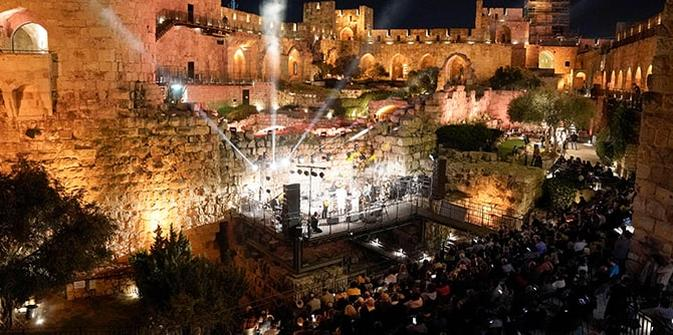
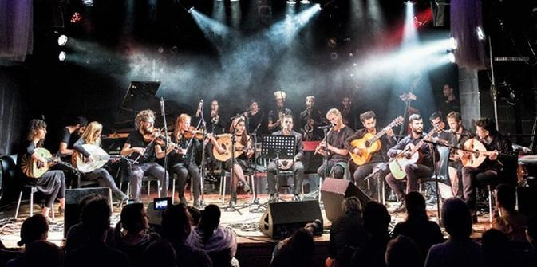
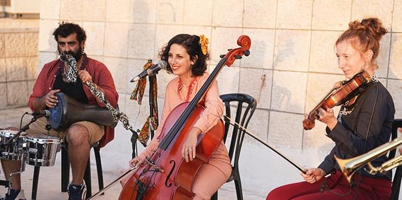
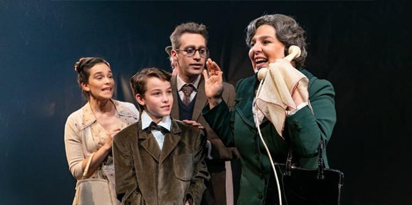

 "סליחות נוסח תחריר" – אירוע הסיום של סדרתרבות 2022 במגדל דוד בירושלים (צילום: ריקי רחמן)
בשנת 2021 הקימה הקרן לירושלים, בתמיכת קרן ג'ק, ג'וזף ומורטון מנדל, את סדרתרבות – פסטיבל קיץ ייחודי המשלב אירועי קולנוע, מחול, תאטרון ומוזיקה. במהלך החודשים אוגוסט וספטמבר מתקיימים בכל רחבי ירושלים סדרה עשירה של אירועי תרבות ואמנות נבחרים המותאמים לתושבי השכונות, תוך התחשבות במאפייניה המיוחדים של כל קהילה ואוכלוסייתה. בין האירועים קונצרטים, הפקות תאטרון, הקרנות סרטים, מופעי מחול, מספרי סיפורים, הקראת שירה, מעגלי תופים, מופעי קרקס ועוד.
 אנסמבל "מדרסה", המנגן מוזיקה ממרוקו ומאלג'יריה תוך שימוש בכלי נגינה ממזרח וממערב (צילום: רז שרעבי)
סדרתרבות נוצרה בראשיתה בתגובה למשבר הכלכלי והחברתי שנגרם על-ידי מגפת הקורונה. באותה תקופה ביקשה קרן מנדל לסייע במיתון חלק מהשפעותיה השליליות של המגפה והציעה מענקי חירום למגוון ארגונים. אחד המענקים ניתן לקרן לירושלים עבור סדרה של אירועי תרבות שמטרתה לחזק את חיי התרבות של תושבי ירושלים ולהעניק הזדמנות חשובה לאמנים ומבצעים ירושלמים להפגין את כישרונותיהם על הבמה לפני קהל רחב.
אירועי הסדרה מתקיימים במזרח ירושלים ובמערבה, בקהילות חילוניות, חרדיות ודתיות-לאומיות כאחד, וההיצע המגוון פונה הן לחובבי תרבות והן לקהל הרחב בכל הגילאים.

אנסמבל "אקוט" בהופעה במנהל קהילתי תלפיות מזרח בירושלים (צילום: ריקי רחמן)
עקב הצלחתה של "סדרתרבות" בקיץ 2021 החליטה קרן מנדל לתמוך בפסטיבל למשך שנתיים נוספות. בשנת 2022 נערכו במסגרת הפסטיבל 64 מופעים ב-34 שכונות ברחבי העיר, ומהם נהנו יותר מ-15,000 צופים ממגוון קהלים. רבים מהאמנים וממנהיגי התרבות המשתתפים הם בוגרי תכנית מנדל למנהיגות בתרבות יהודית, שמטרתה לתרום לחיוניות ולגיוון של התרבות היהודית בישראל באמצעות השקעה במנהיגי חינוך, תרבות וקהילה.

ההצגה "סיפור על אהבה וחושך" על-פי ספרו של עמוס עוז, בתיאטרון החאן (צילום: יעל אילן)
סדרתרבות הבאה תיפתח באמצע אוגוסט, זו השנה השלישית ברציפות. במשך 40 ימים ולילות יוכלו תושבי ירושלים להשתתף במגוון מופעים – מוזיקה, מחול, תאטרון, קולנוע ועוד – באולמות מוכרים ובחללים יוצאי דופן שיותאמו במיוחד לאירוח הפסטיבל השנה.
{kind=link}
{kind=link}
{kind=link}
{kind=link}